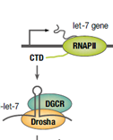
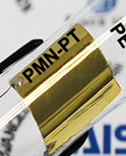
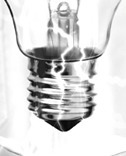

KAIST RESEARCH ACHIEVEMENTS
초고해상도 광초점을 형성하는 산란 수퍼렌즈
박용근 · 조용훈
비선형 슈레딩거 방정식의 다중요철해의 구성을 위한 극한문제의 비퇴화성에 의존하지 않는 변분법의 개발
변재형
면역수용체 LBP의 구조를 밝히다
이지오

줄기세포의 성장을 조절하는 단백질
이대엽 · 한용만
초임계 이산화탄소 냉각 초소형 모듈원자로
이정익 · 김용희 · 정용훈
발전소의대량배출 가스로 전기를 만들다
한종인

인체내에서 자가발전되는 인공심장 박동기
이건재
고화질로 동영상을 압축하는 기술
김문철

체온으로 전기를 생산하는 소자
조병진
암과 관련있는 유전자를 찾아내는 검색툴, 온코서치
박종철
 연구성과 10선
연구성과 10선